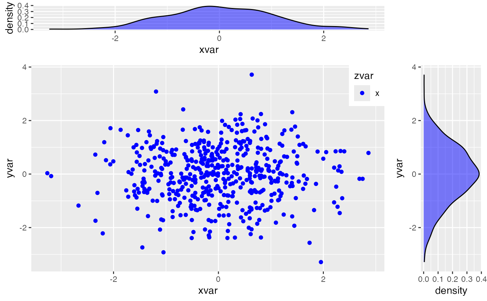

This function helps you in visualizing the dependence between 2 gaussian shocks.
esgplotshocks(x, y = NULL)H. Wickham (2009), ggplot2: elegant graphics for data analysis. Springer New York.
# Number of risk factors
d <- 2
# Number of possible combinations of the risk factors
dd <- d*(d-1)/2
# Family : Gaussian copula
fam1 <- rep(1,dd)
# Correlation coefficients between the risk factors (d*(d-1)/2)
par0.1 <- 0.1
par0.2 <- -0.9
# Family : Rotated Clayton (180 degrees)
fam2 <- 13
par0.3 <- 2
# Family : Rotated Clayton (90 degrees)
fam3 <- 23
par0.4 <- -2
# number of simulations
nb <- 500
# Simulation of shocks for the d risk factors
s0.par1 <- simshocks(n = nb, horizon = 4,
family = fam1, par = par0.1)
s0.par2 <- simshocks(n = nb, horizon = 4,
family = fam1, par = par0.2)
s0.par3 <- simshocks(n = nb, horizon = 4,
family = fam2, par = par0.3)
s0.par4 <- simshocks(n = nb, horizon = 4,
family = fam3, par = par0.4)
esgplotshocks(s0.par1, s0.par2)

esgplotshocks(s0.par2, s0.par3)
esgplotshocks(s0.par2, s0.par4)
esgplotshocks(s0.par1, s0.par4)